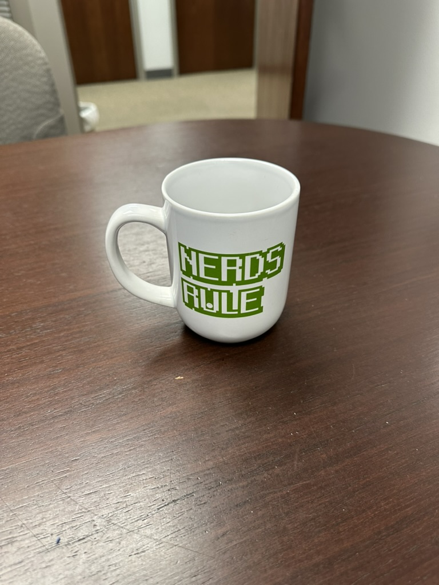
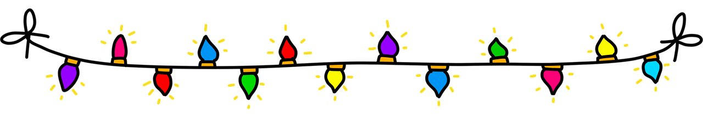

2. Variables, Data, and Operations
Chapter 0010 2
What’s the Point?
-
Write code to declare variables and assign values
-
Understand Python data types
-
Use standard Python naming conventions
-
Output variables using concatenation and interpolation
-
Do some basic math calculations
-
Get and process user input
-
Initialize and access lists
Source code examples from this chapter and associated videos are available on GitHub.
It’s fun to create programs that display stuff on the screen, but that’s pretty limited. To start doing things that are more interesting—and useful—we’ll need to keep track of some information. In computer programming, information is called data, and data is stored in variables.
- variable
-
A piece of data that may change (or "vary") during program execution.
A variable has three parts:
-
A value
-
An identifier
-
A data type
2.1. Variables in Coding
I encourage beginning students to think of a variable like a container, such as a cup.

The container can hold one thing at a time. We can put coffee in it, or we can put water in it—but we can’t put both in at the same time. If we start with coffee and decide we want to put water in there, the coffee gets dumped out and is gone forever. That’s fine, but we’d better make sure we don’t want the coffee anymore before we put something else in the mug.
A variable works the same way. It can hold one value, and that value can vary—that’s where the term comes from—but once it’s changed, that old value is lost.
I guess we could mix coffee and water, but then that’s really a new substance and we can’t get back our plain coffee (or our water). If we want to store coffee and water, we can do that by using two different containers.
From a programming perspective—rather than a coffee perspective—a variable is a location in the computer’s memory where we can store a value.
2.2. Variable Identifiers
In order to use that value, we have to know where to find it, so we give the memory location a name, technically called an identifier.
Variable identifiers or names are the character sequences that identify a variable. There are a few rules that determine whether or not an identifier is valid:
-
It can contain letters (upper or lower case), digits (0 - 9), and/or underscores (_).
-
The first character can’t be a digit.
-
It can’t contain whitespaces (tab, space, etc.) or special characters (like @, #, $, etc.) except for the underscore.
-
It can’t be a Python keyword or reserved word. These are words that are used in the Python language, like
ifandfor, and you’ll learn them as we go.
In addition to those technical rules about identifier names, PEP-8 states that variable identifiers should be all lowercase, with an underscore used to separate words.
By common practice, variable identifiers should be descriptive.
Single-letter variable names, like x for a number, are fine in your math class, but are generally not okay when you’re coding.
And as specified in PEP-8, variable identifiers should be in snake case, which means all lowercase letters with underscores between words.
Examples of good variable names include: band_name, num_band_members, hourly_wage, and so on.
The expectation in my course is that your code will align with those conventions, because that’s what industry people expect. And you will lose points if you don’t.
2.3. Variable Values
Unlike many other languages, Python does not have a specific command for creating (or, as we will call it, initializing) a variable. Instead, the interpreter automatically makes a variable when we assign a value to it for the first time, and that’s done with an assignment statement.
An assignment statement, as the name suggests, assigns a value to a variable. The syntax for an assignment statement is an identifier, followed by the equals sign, followed by the value to assign. An assignment statement to create a variable for a grade point average might look like this:
gpa = 4.0
The interpreter will create the "container" called gpa and fill it with the value 4.0.
2.4. Variable Data Types
A variable is really just a location in computer memory where a piece of data is stored.

When we initialize a variable, the computer will need to know how much memory to set aside for it, and that depends on the kinds of values we want to store. Storing the number 7 doesn’t take very much space; storing a picture of John Elway takes a lot more space (but it’s worth it!).
The type of data we can store in a variable is called its
…drumroll, please…
data type.
In many other programming languages, the programmer specifies the data type.
In Python, the interpreter looks at a value and automatically determines the appropriate data type when we initialize the variable.
For our purposes at this time, there are three Python data types: int, float, and str, with additional types coming later.
2.4.1. The int Data Type
The int data type is for integers.
As you may remember from your math class, an integer is a whole number; that is, a number that doesn’t include any decimal places or fractional values.
5 is an integer and -824 is an integer, while 3.14 and 7 1/2 are not.
Python will automatically use an int when we are storing whole numbers.
int variables1
2
otis_redding_birth_year = 1941
billie_holiday_record_sales = 1200000
2.4.2. The float Data Type
The float data type refers to floating-point numbers.
A floating point number is a number that includes decimal data, such as 4.723 and -100.23.
A fraction like 7 1/2 can also be stored as a floating-point number, but only in decimal form (i.e., 7.5).
The Python interpreter will create a float when we initialize a variable with a decimal number.
float variables1
2
3
marias_gpa = 4.0
vinyl_record_rpm = 33.33
ticket_price_discount = -23.45
2.4.3. The str Data Type
The str data type, perhaps confusingly, refers to text data.
It gets its name because it can hold a bunch of characters put together, like a string of holiday lights.
So we pronounce this data type "string".

str variable is multiple characters strung together like a set of lights.A string can hold any characters: letters (upper and lowercase, which are different), digits (0 through 9), symbols (such as ^ and *), and a variety of special characters.
Since one of the characters a string can hold is a space, we need a way to indicate the start and stop of a str.
In Python, we can use quotation marks, which coders often call double quotes, or apostrophes, which we call single quotes. Unlike many other languages, in Python it doesn’t matter which we use to denote our strings.
str variables1
2
drummers_name = "Charlie Watts"
address = '315 Bowery, New York, NY 10003, USA'
Use whichever symbol you want, but having both as options allows us to include quotes or apostrophes in our strings.
1
2
song_title = "That's alright" (1)
controversial_quote = 'John Lennon said, "We are more popular than Jesus now."' (2)
| 1 | This string includes an apostrophe |
| 2 | This string includes two quotation marks |
Both of those values are valid, but you can see the problem if you try to use the wrong one:
song_title = 'That's alright' # This doesn't work!
The interpreter will see the apostrophe after the word That and think it’s the end of the string; then it will get confused when it sees the additional characters s alright'.
You can indicate that a symbol is part of the string (and not the end of it) by using a backslash character in front of the symbol: song_title = 'That\'s alright'
|
Time To Watch!
Initializing Variables in Python
2.5. Referencing and Outputting Variable Values
Initializing a variable with a value does not produce any output.
If we want to display the output of a variable we just put the identifier in a print() statement without any quotation marks:
1
2
3
4
5
6
artist_name = "Diana Ross"
birth_year = "1944"
print(artist_name)
print("was born in")
print(birth_year)
This code outputs:
Diana Ross was born in 1935
Whenever the interpreter sees a variable identifier in a line of code, which we call a variable reference, it will look up the variable’s value in computer memory and essentially substitute it in place of the identifier.
In the first print() statement in the preceding code, it will see the identifier artist_name and retrieve the value Diana Ross, which it then places into the print() statement.
2.5.1. Concatenating Output
We can combine the output into one statement by creating a string from multiple pieces using the + symbol.
1
2
3
4
artist_name = "Diana Ross"
birth_year = "1944"
print(artist_name + " was born in " + birth_year)
This will output all of the information on one line:
Diana Ross was born in 1935
Creating a str using the + symbol is called concatenating.
Python is assembling the different strings into one longer string.
In Python, we can only concatenate two strings together; it won’t work if we try to concatenate a number onto a string.
For that reason, the birth_year variable in this version of the code is initialized as a str using double quotes.
We’ll see a workaround for that later.
Converting a number to a string for concatenation
Because Python uses the + symbol for concatenation and, as we’ll soon see, also for addition, it stumbles when we try to concatenate a numeric value with a str.
In fact, a program will crash if it encounters that situation.
We avoided that on the previous example because we initialized birth_year as a str by putting the value in double quotes, but we should really keep numbers as numbers.
To address this, we can use the str() function to convert the number to a string.
Inside the parentheses, we just put the value or the variable we want to convert; Python will make the conversion and put the resulting string in place of the function call.
We call this type conversion or type casting.
1
2
3
4
artist_name = "Diana Ross"
birth_year = 1944 (1)
print(artist_name + " was born in " + str(birth_year))
| 1 | birth_year is initialized as an int, so it must be converted using the str() function within the print() statement. |
We’ll take another look at type conversion later in the chapter.
2.5.2. Interpolating Output
Another way to output variables and constants is to use interpolation.
Interpolation is a way to insert the value of a variable or constant into a string at a designated spot.
There are a few different ways to interpolate in Python, but the one we’ll use for now is called formatted string literals, commonly referred to as f-strings.
To use an f-string, we put the character f in front of the opening quotation mark of the string, and then we can put the variable identifier in curly braces { } in the position we want the value inserted.
1
2
3
4
artist_name = "Diana Ross"
birth_year = "1944"
print(f"{artist_name} was born in {birth_year}")
Because the f indicates that we want to interpolate values into the string, the interpreter will retrieve values to insert wherever it sees identifiers in curly braces.
Time To Watch!
Outputting Variables in Python
Files from video:
-
Completed code:
outputting_variables.py
2.5.3. Choosing an Output Method
For our purposes, there’s no difference between outputting using separate print() statements, concatenation, or interpolation; you can use whichever approach you prefer (that gets the result you want).
Many programmers end up using interpolation because it’s easy to write—and easy to read—and it’s the newest approach, introduced in Python 3.6.
It also lends itself well to formatting output, which means making the output look nice and readable; we don’t worry about that here, but eventually you’ll find it useful.
For those reasons, interpolating with f-strings has become standard, and that’s what I’ll use for examples here. But if concatenation or multiple statements is easier for you, feel free to use those for now.
Take It for a Spin
This is a good time to stop and try out what you’ve learned so far. The Coding Practice assignment for this chapter can be completed with the concepts covered to this point.
Deep Cut
Python allows us to control how our output strings are formatted. We might want our numbers to show a certain number of decimal places (like two decimals for currency values) or include commas to make large numbers easier to read (like 1,000,000 instead of 1000000). And there are other formatting options as well. At this stage in our learning, we don’t worry about making our numbers look pretty, but you’re welcome to learn more about formatting strings.
2.6. Math Calculations
To start doing some calculations, we’ll use operators.
You can think of an operator as a symbol that performs a calculation or other action.
You’ve been using an operator already: the assignment operator, which uses the = symbol.
The action it completes is assigning the value on the right of the = symbol to the variable on the left of it.
Arithmetic operations work in a similar way.
In Python, there are five basic arithmetic operators:
| Operator | Description |
|---|---|
|
Addition |
|
Subtraction |
|
Multiplication |
|
Float Division (quotient) |
|
Modulo (remainder) |
|
Exponentiation (power) |
|
Floor Division ("integer division") |
The first four arithmetic operators work pretty much the way you’d expect. Each operator acts on the value to either side:
1
2
sum = 5 + 7 (1)
difference = sum - 2 (2)
| 1 | The value of sum will be 12 |
| 2 | The value of difference will be 10 (i.e., 12 - 2) |
While addition, subtraction, multiplication, and division are straightforward, Python includes three additional operators that are essential for data manipulation and logic.
-
Modulo (
%) lets us find the remainder of a division operation; this is useful for determining if a number is odd or even, among other things. For example,5 % 2evaluates to1, because when you divide 5 by 2, you get a remainder of 1. -
Exponentiation (
**) allows us to raise a number to the power of another number. For example, what we’d write in our math class as 42 is written in Python as4 ** 2; it evaluates to16. -
Floor division (
//) performs division and rounds down (or "floors") the result to a whole number; it basically chops off the decimal part. For example,7 // 2is3, because 7 divided by 2 is 3.5, and removing the decimal part leaves us with 3.
1
2
3
remainder = 13 % 5 (1)
power = 5 ** 3 (2)
floor_division = 14 // 3 (3)
| 1 | the value of remainder will be 3, because 13 divided by 5 is 2 with a remainder of 3 |
| 2 | the value of power will be 125, because 5 to the power of 3 is 125 (5 times 5 times 5) |
| 3 | the value of floor_division will be 4, because 14 divided by 3 is 4.6666, and when we remove the decimal portion, we are left with 4. |
Time To Watch!
Arithmetic Operations in Python
2.6.1. Order of Operations
Early on in your math studies you learned about order of operations when an arithmetic expression has more than one calculation, and it works the same in Python. We call this operator precedence, and here are the guidelines:
-
Any operations enclosed in parentheses are evaluated first, following the rest of the rules here.
-
Exponentiation is evaluated next. The interpreter will first evaluate any
**operations in the expression. If there are more than one**operations, they are evaluated from left to right. -
Multiplication, division, and modulus are evaluated next: the
*,/,//and%operators. If there are more than one of these operations in the expression, they are evaluated from left to right. -
Addition and subtraction are evaluated last. As above, if the expression contains more than one
+or-operator, they evaluate from left to right.
Note: There are other Python operations that add to these precedence rules, but we’ll cover those as they come up.
Consider the following examples:
1
2
3
result1 = 17 - 4 * 6 / 3 (1)
result2 = 17 - 4 / 2 + 2 (2)
result3 = 17 - 4 / (2 + 2) (3)
| 1 | result1 is 9: 4 * 6 is 24, then 24 / 3 is 8, and then 17 - 8 is 9. |
| 2 | result2 is 17: 4 / 2 is 2, then 17 - 2 is 15, and then 15 + 2 is 17. |
| 3 | result3 is 16: (2 + 2) is 4, then 4 / 4 is 1, and then 17 - 1 is 16. |
2.6.2. More Arithmetic with Less Typing!
There’s a pretty consistent rule of thumb in coding that says programmers want to type as little as possible, so programming languages often provide shorthand ways of writing code that’s used frequently.
Assignment operators (sometimes called shorthand operators) simplify the syntax when you need to change a variable’s value relative to it’s existing value.
For example, if we want to add 10 to a weight variable that already has the value 145, we could use the following:
weight = weight + 10The Python interpreter starts on the right side of the assignment expression and retrieves the current value of weight, which is 145, adds 10 to that value, and stores the result back in weight.
We can combine the addition operator (+) with the assignment operator (=) to make an augmented assignment operator: +=, which allows us to rewrite the above line of code as:
weight += 10You can use assignment operators for all of the arithmetic operations.
| Operator | Description | Example | Equivalent |
|---|---|---|---|
|
Adds the value on the right to variable value on the left |
|
|
|
Subtracts the value on the right from the variable on the left |
|
|
|
Multiplies the value on the left by the value on the right |
|
|
|
Divides the variable value on the left by the value on the right. |
|
|
|
Divides the variable value on the left by value on the right, then assigns the remainder. |
|
|
|
Raises the variable value on the left to the power of the value on the right. |
|
|
Python doesn’t have an increment or decrement operator like some other programming languages. To increase a number by one, use += 1, and to decrease a number by one, use -= 1.
|
2.7. Handling User Input
Until now, our code hasn’t been interactive—each execution of a program results in the exact same output, and the user never has the chance to input anything.
To produce output, we’ve been using print() to display text on the screen.
For input, we’ll use input().
1
2
3
print("Enter the name of your favorite music artist: ")
artist = input()
print(f"Your favorite music artist is: {artist}")
You can also specify a prompt string when calling input so you don’t have to use a print() statement to tell the user what to input.
1
2
artist = input("Enter the name of your favorite music artist: ")
print(f"Your favorite music artist is: {artist}")
input() only deals with str values; even if the user types in a number, it will be stored as a str—which means we’ll need to convert it to a number if we want to do any math with it.
1
2
3
age = input ("Enter your age: ")
age+=1 (1)
print(f"Next year you will be {age}")
| 1 | This will cause the program to crash because input() returns a str and therefore creates age as a string rather than a numeric type, and you can’t do arithmetic on a str. |
2.7.1. Type Conversion
Since the user’s input is store as a str, we’ll need to convert it to a number before we can do any math with it.
Python provides built-in functions for converting a str to a number: int() and float(), which convert a string to an integer (whole number) or floating point (decimal) number, respectively.
caption="Example 2.1 - "] .Correct use of numeric user input
1
2
3
age = int(input("Enter your age: "))
age += 1 (1)
print(f"Next year you will be {age}")
| 1 | This works because the int() function converts the user’s input from a str to an int. |
If the Python interpreter is not able to convert the string to a number, it causes an error and the program will crash. For example, if the user types in purple for their age, the program will crash—purple can’t be converted to an int. Eventually, we’ll learn how to handle that kind of error gracefully, but for now, we have to live with users being able to crash our programs.
|
2.8. Lists
To this point, we’ve made a big deal about how a variable can only hold one value at a time. If you try to put another value in a variable, the existing value is lost. When we need to store a bunch of stuff, we just make more variables.
Consider keeping track of the top 5 songs for the year 1964. Though we might put all five song titles in one big string and find some clever way to separate them when we need to, we really need to treat individual data items as separate values. So, we might do something like this:
caption="Example 2.2 - "] .Using multiple variables to store related data
1
2
3
4
5
first_song = “I Want to Hold Your Hand” # The Beatles
second_song= “She Loves You” # The Beatles
third_song = “Hello, Dolly!” # Louis Armstrong
fourth_song = “Oh, Pretty Woman” # Roy Orbison
fifth_song = “I Get Around” # The Beach Boys
These five pieces of data are related to each other (they’re all top songs from 1964), but we can store and work with them separately. And this works just fine, especially if we only have a few items to keep track of.
But what if we want the top 20 songs, or the top 100? Using this approach, we’re going to be creating a lot of variables!
Have groups of related data is a common situation, so computer scientists have come up with a variety of ways to store and organize collections of data. In general terms, we can call these collections data structures, and there are a ton of them.
We’ll take a closer look at some basic and commonly used data structures later in the book, but for now, we should at least know one simple way to store a collection. We’ll do that with lists.
Check Yourself Before You Wreck Yourself (on the assignments)
Chapter Review Questions
Sample answers provided in the Liner Notes.